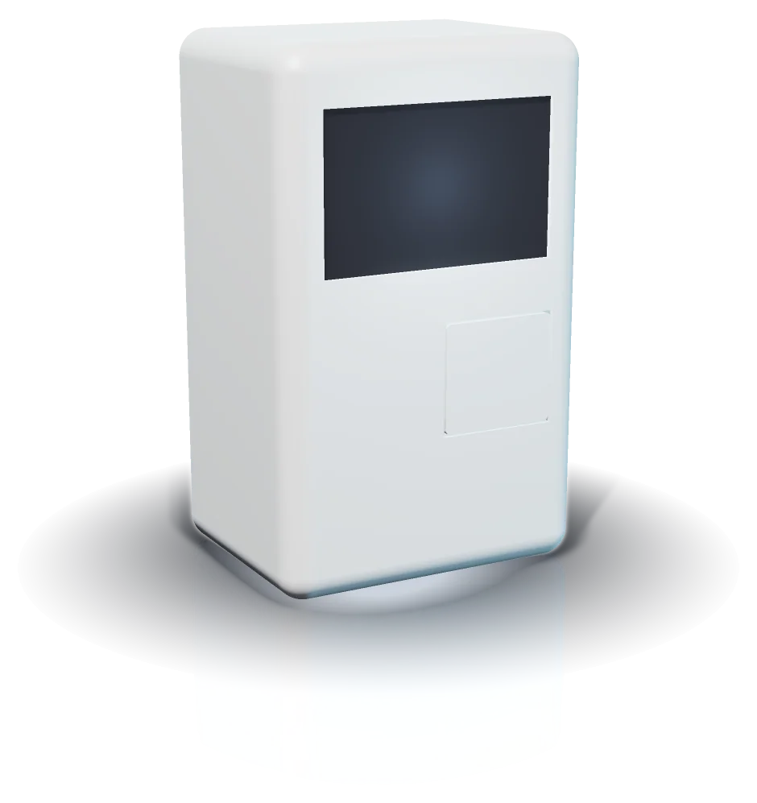

His face
Two faces, drawn for every scene
Switch, and he fetches the other set at the check-in that starts straight away. A few minutes, then he unboxes it.

His face, what he gets up to, how he feels, where he lives. Plug him in on a PC, or find him over Bluetooth from a phone. No files, no code, nothing to upload.
He only needs your WiFi once. If you have him plugged in or over Bluetooth, tap his radio, or WiFi, up top instead.
His boot animation plays, and if he has never been set up he asks for it.
No password. A page opens by itself: pick your home network, type its password, save. If nothing pops up, browse to 192.168.4.1.
He connects, fetches his scenes and comes alive. Changed your WiFi? Find him here, by cable or Bluetooth, and give him the new one under WiFi.
Switch, and he fetches the other set at the check-in that starts straight away. A few minutes, then he unboxes it.
How bright his face is while he is up. Asleep he dims right down, as always.
Study: calm eyes, no sound, no surprises - a present waits until you are done. Party: something every few seconds. Sleep: a nap now, until it ends or you tap him.
His mood drifts through the day and petting lifts it.
He chirps and waves for twelve seconds - even with his sound off - so you can follow the sound. A tap on his button stops him.
Up to 12 letters, numbers or spaces. His own page wears it, and this app says hello with it.
Switch a kind off and he leaves those alone; open one to choose scene by scene. Nothing changes until you apply.
Loading the list…
New scenes and updates come down it. Change it here.
…
Checking…
Screen, flash, battery, button, radio. Nothing to open, no meter.
His shelf with a tick beside everything, a place to drop your own animations, his packs. His radio rests between check-ins, so wake it first.
Asleep, he dims, shuts his eyes and stirs now and then; a tap wakes him, and on battery he switches himself off after three hours. Off, he waits for a tap or a cable, and lasts for months.